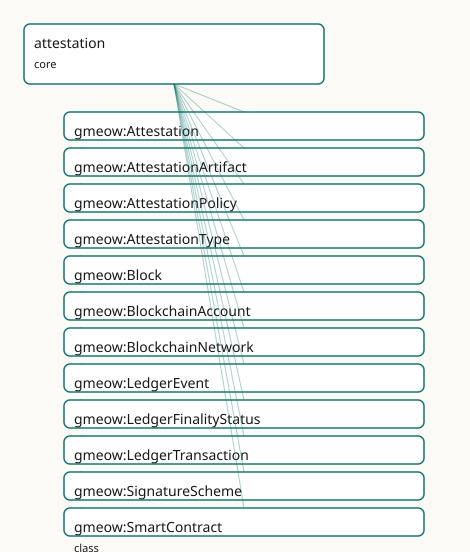

GMEOW Attestation Module
- IRI: https://blackcatinformatics.ca/gmeow/slices/attestation
- Tier: core
Group: core
What This Slice Covers
This slice owns 75 terms and contributes 20 mapping or projection rows. Use it when its terms match the native fact you want to preserve; use the linkage tables to see how those facts leave GMEOW for consumer vocabularies.
Dependencies
gmeow:slices/eventsgmeow:slices/kernelgmeow:slices/observationsgmeow:slices/provenancegmeow:slices/trust
Consumers
- Signed-claim envelopes for trust, software releases (SLSA/Sigstore), and GTS COSE signing.
Local Map

Examples
Software Release
- Source:
slices/core/attestation/examples/software-release.ttl - GMEOW terms:
gmeow:Attestation,gmeow:AttestationArtifact,gmeow:CreativeWork,gmeow:CryptographicSignature,gmeow:SoftwareAgent,gmeow:VerificationResult,gmeow:artifactMediaType,gmeow:attestationArtifact,gmeow:attestationType,gmeow:attestationTypeSLSAProvenance - External prefixes:
xsd
# SPDX-FileCopyrightText: 2026 Blackcat Informatics® Inc. <paudley@blackcatinformatics.ca>
# SPDX-License-Identifier: CC-BY-4.0
#
# Worked example: a supply-chain attestation . A gmeow:Attestation binds an
# gmeow:attester (who vouches) to an gmeow:attestedSubject (what is vouched for)
# under an gmeow:attestationType drawn from the open vocabulary of real formats
# (SLSA provenance, in-toto, DSSE, C2PA, verifiable credential, …). Here a CI
# pipeline issues a SLSA-provenance attestation over a release bundle, carries
# the signed artifact, and a relying party records a gmeow:VerificationResult —
# the attestation is a claim; verifying it is a separate, recorded act.
@prefix gmeow: <https://blackcatinformatics.ca/gmeow/> .
@prefix ex: <https://blackcatinformatics.ca/gmeow/examples/attestation/> .
@prefix xsd: <http://www.w3.org/2001/XMLSchema#> .
ex:ciSystem a gmeow:SoftwareAgent ; gmeow:name "Acme CI pipeline"@en .
ex:relyingParty a gmeow:SoftwareAgent ; gmeow:name "Production deploy gate"@en .
ex:release a gmeow:CreativeWork ;
gmeow:title "myapp 1.0.0 release bundle"@en ;
gmeow:contentDigest "sha256:abc123def4567890abc123def4567890abc123def4567890abc123def4567890" .
# --- The attestation: the CI system vouches for the release as SLSA provenance.
ex:slsaAttestation a gmeow:Attestation ;
gmeow:attester ex:ciSystem ;
gmeow:attestedSubject ex:release ;
gmeow:attestationType gmeow:attestationTypeSLSAProvenance ;
gmeow:issuedAt "2026-06-14T12:00:00Z"^^xsd:dateTime ;
gmeow:attestationArtifact ex:artifact ;
gmeow:hasSignature ex:sig ;
gmeow:verificationResult ex:verifyResult .
ex:artifact a gmeow:AttestationArtifact ;
gmeow:artifactMediaType "application/vnd.in-toto+json" ;
gmeow:contentDigest "sha256:def456abc1237890def456abc1237890def456abc1237890def456abc1237890" .
ex:sig a gmeow:CryptographicSignature ;
gmeow:signatureAlgorithm "ecdsa-p256" ;
gmeow:signedBy ex:ciSystem .
# --- Verification is its own recorded act: the deploy gate checked the chain.
ex:verifyResult a gmeow:VerificationResult ;
gmeow:hasVerificationStatus gmeow:verificationStatusVerified ;
gmeow:verifiedBy ex:relyingParty .
Terms
Classes
| Term | Label | Definition |
|---|---|---|
gmeow:Attestation |
Attestation | A reified assertion envelope that an attester vouches for a claim, artifact, identity binding, process, quality report, or ledger claim under a specific policy... |
gmeow:AttestationArtifact |
Attestation Artifact | A concrete carrier of an attestation — in-toto JSON, SLSA provenance, W3C Verifiable Credential, DSSE envelope, C2PA manifest, EAT token, signed RDF graph, SCI... |
gmeow:AttestationPolicy |
Attestation Policy | The policy or framework under which an attestation was issued — a value vocabulary (individuals, never subclasses). Open-ended; specific policies are minted as... |
gmeow:AttestationType |
Attestation Type | The kind of attestation being made — a value vocabulary (individuals, never subclasses). Distinguishes SLSA provenance, in-toto attestation, VC, DSSE envelope,... |
gmeow:Block |
Block | A block of transactions on a distributed ledger or blockchain. |
gmeow:BlockchainAccount |
Blockchain Account | An address-controlled account on a blockchain or distributed ledger — the entity that holds assets, signs transactions, or controls a smart contract. Aligns to... |
gmeow:BlockchainNetwork |
Blockchain Network | A blockchain network identified by a chain identifier (e.g. CAIP-2 chainId). |
gmeow:LedgerEvent |
Ledger Event | An event emitted by a smart contract or recorded on a ledger — a log entry, oracle callback, or bridge message. |
gmeow:LedgerFinalityStatus |
Ledger Finality Status | The finality state of a ledger transaction or block — a value vocabulary (individuals, never subclasses). |
gmeow:LedgerTransaction |
Ledger Transaction | A transaction recorded on a distributed ledger or blockchain — the information-object representation of the payload, not the on-chain bytes themselves. |
gmeow:SignatureScheme |
Signature Scheme | The cryptographic signature scheme used — a value vocabulary (individuals, never subclasses). Distinct from gmeow:KeyScheme: a key scheme names the key format... |
gmeow:SmartContract |
Smart Contract | A deployed program on a blockchain or distributed ledger, identified by a contract address. |
gmeow:TransparencyLogEntry |
Transparency Log Entry | An append-only registry evidence record such as a Rekor entry, SCITT receipt, certificate-transparency log entry, or timestamp/notary log entry. Proves inclusi... |
gmeow:VerificationActivity |
Verification Activity | An activity that checks a signature, attestation, artifact, or ledger inclusion proof — performed by a verifier agent or software. The outcome is a gmeow:Verif... |
gmeow:VerificationResult |
Verification Result | An information object recording the outcome of a verification activity — verified, failed, unverified, expired, revoked, policy-failed, finality-pending, etc.... |
gmeow:VerificationStatus |
Verification Status | The outcome status of a verification result — a value vocabulary (individuals, never subclasses). |
Properties
| Term | Label | Definition |
|---|---|---|
gmeow:artifactMediaType |
artifact media type | The media type of the attestation artifact's serialization (e.g. application/vnd.in-toto+json, application/vc+ld+json). |
gmeow:attestationArtifact |
attestation artifact | The concrete carrier (in-toto JSON, VC, DSSE envelope, C2PA manifest, etc.) that embodies an attestation. Non-functional: an attestation may be carried by mult... |
gmeow:attestationPolicy |
attestation policy | The policy under which an attestation was issued — a value vocabulary individual naming the rules or framework the attester followed. Non-functional: competing... |
gmeow:attestationType |
attestation type | The type of attestation being made — a value vocabulary individual from gmeow:AttestationType. Non-functional: an attestation may carry multiple type tags (e.g... |
gmeow:attestedClaim |
attested claim | The observation or claim that an attestation vouches for, when the subject of the attestation is itself a claim rather than a bare entity. Non-functional: an a... |
gmeow:attestedSubject |
attested subject | The entity that an attestation is about — the thing being vouched for. Non-functional: an attestation may concern multiple subjects (e.g. a key↔identity bindin... |
gmeow:attester |
attester | The agent that issued an attestation — the vouching party. Functional within the relator: one attester per Attestation (co-authorship is modelled as multiple A... |
gmeow:blockHash |
block hash | The hash of a ledger block. |
gmeow:blockNumber |
block number | The sequential number of a ledger block. |
gmeow:chainId |
chain id | The chain identifier of a blockchain network (e.g. CAIP-2 chainId, eip155:1). |
gmeow:confirmationDepth |
confirmation depth | The number of blocks confirming a transaction or log entry since its inclusion. Domain-free. |
gmeow:contractAddress |
contract address | The address at which a smart contract is deployed. |
gmeow:finalityStatus |
finality status | The finality status of a ledger transaction or block. Domain-free. |
gmeow:hasAttestation |
has attestation | Relates an entity to an attestation about it — the inverse of gmeow:attestedSubject. Non-functional: an entity may have many co-existing attestations from diff... |
gmeow:hasSignature |
has signature | Relates an entity, attestation, or artifact to a cryptographic signature over it. Domain-free (universal spine): anything may carry a signature. The message-sp... |
gmeow:hasVerificationStatus |
has verification status | The categorical outcome of a verification result. Non-functional: a single result may carry multiple status interpretations (e.g. 'verified but expired'). |
gmeow:issuedAt |
issued at | The instant an attestation was issued. Functional: the issue time is constitutive of the attestation's identity. |
gmeow:ledgerInclusionProof |
ledger inclusion proof | A cryptographic inclusion proof for a transaction, event, or transparency log entry. Domain-free: applies to LedgerTransaction, LedgerEvent, TransparencyLogEnt... |
gmeow:logEntryIndex |
log entry index | The sequential index of the entry within its transparency log. |
gmeow:logEntryUrl |
log entry URL | A URL at which the transparency log entry can be retrieved. Non-functional: multiple mirrors may exist. |
gmeow:logIndex |
log index | The index of a ledger event within its containing block or transaction. |
gmeow:signatureOf |
signature of | The entity, attestation, or artifact that a cryptographic signature is over — the inverse of gmeow:hasSignature. |
gmeow:signatureRecoveryAddress |
signature recovery address | The blockchain address recovered from a signature's recovery data. Domain-free: may apply to CryptographicSignature or BlockchainAccount. |
gmeow:transactionHash |
transaction hash | The hash of a ledger transaction. |
gmeow:transparencyLogEntry |
transparency log entry | A transparency log entry associated with an attestation. Non-functional: an attestation may have entries in multiple logs. |
gmeow:verificationActivity |
verification activity | The verification activity performed on an attestation. Non-functional: an attestation may be verified multiple times by different verifiers. |
gmeow:verificationResult |
verification result | The result of a verification activity applied to an attestation. Non-functional: multiple verification results may coexist from different verifiers or at diffe... |
gmeow:verifiedBy |
verified by | The agent that produced a verification result. Non-functional: joint verification by multiple agents is valid. |
Individuals
| Term | Label | Definition |
|---|---|---|
gmeow:attestationTypeAIOutput |
AI output attestation | An attestation about the provenance, generation parameters, or content characteristics of an AI-generated output. |
gmeow:attestationTypeBlockchainClaim |
blockchain claim | A claim recorded on a distributed ledger or blockchain, whose existence and ordering are verifiable by network consensus. |
gmeow:attestationTypeC2PA |
C2PA manifest | C2PA manifest attestation for media content provenance and authenticity, per the Coalition for Content Provenance and Authenticity. |
gmeow:attestationTypeDSSE |
DSSE envelope | Dead Simple Signing Envelope (DSSE) — a lightweight, payload-agnostic envelope for authenticated messages. |
gmeow:attestationTypeEAT |
EAT token | Entity Attestation Token (EAT) — a claim about device or hardware state, typically encoded as a CBOR Web Token. |
gmeow:attestationTypeGitSignedTag |
git signed tag | A Git tag signed with OpenPGP, SSH, or X.509 to assert source-code integrity. |
gmeow:attestationTypeInToto |
in-toto attestation | in-toto attestation about a step in a software supply chain, used to verify the integrity of a build or distribution pipeline. |
gmeow:attestationTypeNanopublication |
nanopublication | A nanopublication — a small, citable, signed RDF publication with assertion, provenance, and publication-info graphs. |
gmeow:attestationTypeQualityReport |
quality report attestation | An attestation about quality-assessment results, test outcomes, or conformance metrics for an artifact or process. |
gmeow:attestationTypeReleaseManifest |
release manifest | A software-release manifest listing the artifacts, checksums, and metadata that constitute a release. |
gmeow:attestationTypeSCITT |
SCITT signed statement | SCITT signed statement — a transparency-service-registered attestation for supply-chain integrity. |
gmeow:attestationTypeSLSAProvenance |
SLSA provenance | SLSA provenance attestation describing how a software artifact was produced, per the Supply-chain Levels for Software Artifacts framework. |
gmeow:attestationTypeSignedRDF |
signed RDF graph | An RDF graph or dataset signed as a whole, often using RDF Dataset Canonicalization and detached signatures. |
gmeow:attestationTypeVerifiableCredential |
verifiable credential | W3C Verifiable Credential — a cryptographically verifiable claim about a subject, typically issued by a trusted entity. |
gmeow:finalityStatusConfirmed |
confirmed | The transaction has been included in a block and seen by the network, but may still be reorged. |
gmeow:finalityStatusFinalized |
finalized | The transaction has reached ledger-specific finality and is considered irreversible under consensus rules. |
gmeow:finalityStatusOrphaned |
orphaned | The block containing the transaction was abandoned by the canonical chain. |
gmeow:finalityStatusPending |
pending | The ledger transaction has been submitted but not yet included in a block or confirmed. |
gmeow:finalityStatusReorged |
reorged | The transaction was affected by a chain reorganization and is no longer in the canonical chain. |
gmeow:signatureSchemeBls12381 |
BLS12-381 | BLS signature over the pairing-friendly BLS12-381 curve, supporting signature aggregation. The local name is hyphen-free by design — it is the repo's one IRI t... |
gmeow:signatureSchemeECDSAP256 |
ECDSA-P256 | ECDSA over the NIST P-256 curve — widely used in TLS, government, and enterprise identity systems. |
gmeow:signatureSchemeECDSASecp256k1 |
ECDSA-secp256k1 | ECDSA over the secp256k1 curve — common in Bitcoin, Ethereum, and other blockchain systems. |
gmeow:signatureSchemeEd25519 |
Ed25519 | Ed25519 — Edwards-curve Digital Signature Algorithm over Curve25519, compact and fast. |
gmeow:signatureSchemeRSASHA256 |
RSA-SHA256 | RSA signature with SHA-256 — widely used in X.509 certificates, JWTs, and S/MIME. |
gmeow:verificationStatusExpired |
expired | The claim's declared validity period has ended, regardless of whether it was previously verified. |
gmeow:verificationStatusFailed |
failed | The claim failed verification — signature invalid, evidence insufficient, or assertion contradicted. |
gmeow:verificationStatusFinalityPending |
finality pending | Awaiting distributed-ledger finality before the claim can be considered settled. |
gmeow:verificationStatusPolicyFailed |
policy failed | The claim did not satisfy one or more policy requirements, even if cryptographically valid. |
gmeow:verificationStatusRevoked |
revoked | The claim has been explicitly revoked by its issuer or an authorized revoking party. |
gmeow:verificationStatusUnverified |
unverified | The claim has not yet been verified; no verification result is available. |
gmeow:verificationStatusVerified |
verified | The claim has successfully passed verification against the required policy and signature checks. |
Linkages
- Rows: 20
- Projection profiles:
intoto,sigstore,slsa - External vocabularies:
dqv,https,prov,rdf,schema,vc,wot
| Source | Kind | Profile | Predicate/Relation | Target | Evidence |
|---|---|---|---|---|---|
gmeow:Attestation |
equivalence | - |
skos:closeMatch | prov:Entity | gmeow-attestation.sssom.tsv; gmeow:eqAttestation001; confidence 0.8 |
gmeow:Attestation |
equivalence | - |
skos:relatedMatch | schema:ClaimReview | gmeow-deception.sssom.tsv; gmeow:eqDeception001; confidence 0.5 |
gmeow:Attestation |
equivalence | - |
skos:closeMatch | vc:VerifiableCredential | gmeow-attestation.sssom.tsv; gmeow:eqAttestation008; confidence 0.7 |
gmeow:Attestation |
equivalence | - |
skos:relatedMatch | wot:Endorsement | gmeow-attestation.sssom.tsv; gmeow:eqAttestation013; confidence 0.6 |
gmeow:AttestationArtifact |
equivalence | - |
skos:closeMatch | prov:Entity | gmeow-attestation.sssom.tsv; gmeow:eqAttestation003; confidence 0.8 |
gmeow:VerificationActivity |
equivalence | - |
skos:relatedMatch | dqv:QualityAssessment | gmeow-attestation.sssom.tsv; gmeow:eqAttestation014; confidence 0.5 |
gmeow:VerificationActivity |
equivalence | - |
skos:closeMatch | prov:Activity | gmeow-attestation.sssom.tsv; gmeow:eqAttestation002; confidence 0.9 |
gmeow:VerificationResult |
equivalence | - |
skos:closeMatch | schema:Rating | gmeow-deception.sssom.tsv; gmeow:eqDeception002; confidence 0.6 |
gmeow:VerificationResult |
equivalence | - |
skos:closeMatch | vc:VerifiablePresentation | gmeow-attestation.sssom.tsv; gmeow:eqAttestation012; confidence 0.5 |
gmeow:attestedSubject |
equivalence | - |
skos:closeMatch | vc:credentialSubject | gmeow-attestation.sssom.tsv; gmeow:eqAttestation010; confidence 0.75 |
gmeow:attester |
equivalence | - |
skos:closeMatch | prov:wasAttributedTo | gmeow-attestation.sssom.tsv; gmeow:eqAttestation004; confidence 0.7 |
gmeow:attester |
equivalence | - |
skos:closeMatch | vc:issuer | gmeow-attestation.sssom.tsv; gmeow:eqAttestation009; confidence 0.8 |
gmeow:issuedAt |
equivalence | - |
skos:closeMatch | vc:issuanceDate | gmeow-attestation.sssom.tsv; gmeow:eqAttestation011; confidence 0.85 |
gmeow:Attestation |
projection | intoto |
projects to / <= | https://in-toto.io/Statement/v1#Statement, https://in-toto.io/Statement/v1#predicateType, https://in-toto.io/Statement/v1#subject, rdf:type | gmeow:mapInTotoStatement; lossy: attestation artifact, attester, policy, verification result, transparency log, temporal scope |
gmeow:Attestation |
projection | slsa |
projects to / <= | https://slsa.dev/provenance/v1#buildLevel | gmeow:mapSlsaLevel; confidence 0.7; lossy: attester identity, attestation artifact, verification result |
gmeow:TransparencyLogEntry |
projection | sigstore |
projects to / <= | https://sigstore.dev/rekor/v1#logEntry, https://sigstore.dev/rekor/v1#logIndex, https://sigstore.dev/rekor/v1#logIndexURL, rdf:type | gmeow:mapSigstoreLogEntry; lossy: attestation body, inclusion proof, confirmation depth, finality status |
gmeow:attestationType |
projection | intoto |
projects to / <= | https://in-toto.io/Statement/v1#Statement, https://in-toto.io/Statement/v1#predicateType, https://in-toto.io/Statement/v1#subject, rdf:type | gmeow:mapInTotoStatement; lossy: attestation artifact, attester, policy, verification result, transparency log, temporal scope |
gmeow:attestedSubject |
projection | intoto |
projects to / <= | https://in-toto.io/Statement/v1#Statement, https://in-toto.io/Statement/v1#predicateType, https://in-toto.io/Statement/v1#subject, rdf:type | gmeow:mapInTotoStatement; lossy: attestation artifact, attester, policy, verification result, transparency log, temporal scope |
gmeow:logEntryIndex |
projection | sigstore |
projects to / <= | https://sigstore.dev/rekor/v1#logEntry, https://sigstore.dev/rekor/v1#logIndex, https://sigstore.dev/rekor/v1#logIndexURL, rdf:type | gmeow:mapSigstoreLogEntry; lossy: attestation body, inclusion proof, confirmation depth, finality status |
gmeow:logEntryUrl |
projection | sigstore |
projects to / <= | https://sigstore.dev/rekor/v1#logEntry, https://sigstore.dev/rekor/v1#logIndex, https://sigstore.dev/rekor/v1#logIndexURL, rdf:type | gmeow:mapSigstoreLogEntry; lossy: attestation body, inclusion proof, confirmation depth, finality status |
Guide
Attestation, verification, and transparency — modelling & interoperability guide
GMEOW models attestation as gmeow:Attestation, a gufo:Relator that reifies a
signed claim envelope. The module is intentionally cross-cutting: it is not tied to
any single domain (identity, messaging, supply chain, or publishing) and is designed to
be used as a common substrate for any scenario that needs provenance-bearing assertions,
verification activities, and append-only transparency logs.
The design follows GMEOW Principle 12 (solver boundary): the model gives you what to assert and how to record verification, not a decision procedure for whether an assertion is true.
Core classes
| GMEOW class | gUFO kind | What it represents |
|---|---|---|
gmeow:Attestation |
gufo:Relator |
The reified assertion envelope (who said what, when, with what evidence). |
gmeow:AttestationArtifact |
gufo:InformationObject |
A document or payload that carries the attestation (credential, certificate, signed statement, VC, etc.). |
gmeow:AttestationPolicy |
gufo:AbstractIndividualType |
Rules under which an attestation was issued (open value vocabulary). |
gmeow:VerificationActivity |
gmeow:Activity |
The act of checking an attestation against its policy. |
gmeow:VerificationResult |
gufo:InformationObject |
The outcome of a verification activity, including the final status. |
gmeow:TransparencyLogEntry |
gufo:InformationObject |
A single append-only record in a transparency log (Rekor entry, SCITT receipt, CT inclusion proof, etc.). |
Value vocabularies
| Vocabulary | Purpose |
|---|---|
gmeow:AttestationType |
What kind of attestation this is (slsaProvenance, inToto, verifiableCredential, c2pa, eat, signedRdf, scitt, nanopublication, blockchainClaim, gitSignedTag, releaseManifest, qualityReport, aiOutput). |
gmeow:SignatureScheme |
The cryptographic algorithm (rsaSha256, ed25519, ecdsaSecp256k1, ecdsaP256, bls12-381). |
gmeow:VerificationStatus |
Outcome of verification (verified, failed, unverified, expired, revoked, policyFailed, finalityPending). |
gmeow:LedgerFinalityStatus |
Finality state of a ledger transaction/block (pending, confirmed, finalized, orphaned, reorged). |
Key properties
Attestation → world
| Property | Domain | Range | Meaning |
|---|---|---|---|
gmeow:attestationType |
Attestation |
AttestationType |
What kind of assertion envelope this is. |
gmeow:attestedSubject |
Attestation |
Entity |
What the attestation is about. |
gmeow:attestedClaim |
Attestation |
Observation |
The specific claim being asserted. |
gmeow:attester |
Attestation |
Agent |
Who issued the attestation (functional). |
gmeow:issuedAt |
Attestation |
xsd:dateTime |
When the attestation was issued (functional). |
gmeow:attestationArtifact |
Attestation |
AttestationArtifact |
The carrying document/serialization. |
gmeow:attestationPolicy |
Attestation |
AttestationPolicy |
Rules governing this attestation. |
gmeow:hasAttestation |
Entity |
Attestation |
Inverse of attestedSubject. |
gmeow:hasSignature |
(universal) | CryptographicSignature |
Cross-cutting signature pointer (also used by messages, documents, etc.). |
Artifact
| Property | Domain | Range | Meaning |
|---|---|---|---|
gmeow:artifactMediaType |
AttestationArtifact |
rdfs:Literal |
Media type of the serialization (e.g. application/vc+ld+json, application/vnd.in-toto+json). |
Verification
| Property | Domain | Range | Meaning |
|---|---|---|---|
gmeow:verificationActivity |
Attestation |
VerificationActivity |
The verification activity performed on an attestation. |
gmeow:verificationResult |
Attestation |
VerificationResult |
The result of a verification activity. |
gmeow:verifiedBy |
VerificationResult |
Agent |
The agent that produced the verification result. |
gmeow:hasVerificationStatus |
VerificationResult |
VerificationStatus |
Final categorical outcome. |
Transparency & ledger
| Property | Domain | Range | Meaning |
|---|---|---|---|
gmeow:transparencyLogEntry |
Attestation |
TransparencyLogEntry |
A transparency log entry associated with an attestation. |
gmeow:logEntryUrl |
TransparencyLogEntry |
rdfs:Literal |
URL at which the entry can be retrieved. |
gmeow:logEntryIndex |
TransparencyLogEntry |
xsd:integer |
Sequential index within its log (functional). |
gmeow:ledgerInclusionProof |
(universal) | rdfs:Literal |
Cryptographic inclusion proof (domain-free). |
gmeow:confirmationDepth |
(universal) | xsd:integer |
Number of confirming blocks (domain-free). |
gmeow:finalityStatus |
(universal) | LedgerFinalityStatus |
Finality state (domain-free). |
Signature (reused from the trust module)
| Property | Domain | Range | Meaning |
|---|---|---|---|
gmeow:signedBy |
CryptographicSignature |
Agent |
The signing identity. |
gmeow:signingKey |
CryptographicSignature |
rdfs:Literal |
The key that produced the signature. |
gmeow:signatureAlgorithm |
CryptographicSignature |
rdfs:Literal |
Algorithm identifier. |
Cross-cutting reuse (not redefined in this module)
The attestation module reuses existing cross-cutting properties rather than minting new IRIs (Principle 4):
| What you need | Use |
|---|---|
| Expiry / validity window | gmeow:validFrom / gmeow:validUntil (temporal module) |
| Content identity | gmeow:contentDigest (sources module) |
| Version fingerprint | gmeow:versionFingerprint (versions module) |
| Confidence | gmeow:confidence (provenance module) |
| Standpoint | gmeow:accordingTo / gmeow:standpointModality (standpoint module) |
| Suppression | gmeow:displayable false (core module, Principle 10) |
| Activity provenance | gmeow:wasGeneratedBy / gmeow:wasAttributedTo (provenance module) |
Signature model
gmeow:hasSignature is intentionally domain-free (no rdfs:domain). Anything that
can carry a cryptographic signature — a message, a document, an attestation artifact, a
transparency-log entry — uses the same property. The kind of signature is expressed
through the range class:
gmeow:CryptographicSignature— abstract superclass.gmeow:DKIMSignature— email domain-key signature (lives in the email slice; specializes trust'sCryptographicSignature).gmeow:SMIMESignature— S/MIME email signature.gmeow:PGPSignature— OpenPGP signature.
Signature metadata (signer key, algorithm) is on the signature object itself via
gmeow:signedBy, gmeow:signingKey, and gmeow:signatureAlgorithm.
What Attestation is not
- Not a truth guarantee.
Attestationrecords who asserted what; truth is a standpoint-indexed claim (gmeow:StandpointClaim) handled by the coreference module. - Not a replacement for
Certification.gmeow:Certification(trust module) binds a public key to an identity via agmeow:certifier; its property shape is different fromAttestation(which usesattester/attestedSubject/attestedClaim).Certificationis documented as a specialisation of attestation viaskos:scopeNote, not a subclass. - Not a trust score. Verification yields a discrete status (
verified/failed/revoked/expired/unverified), not a numeric confidence. Confidence values, when needed, are attached to the underlyingObservationorStandpointClaim.
Example: a self-issued verifiable credential
@prefix gmeow: <https://blackcatinformatics.ca/gmeow/> .
@prefix xsd: <http://www.w3.org/2001/XMLSchema#> .
@prefix ex: <https://example.org/id/> .
ex:vcOver18 a gmeow:Attestation ;
gmeow:attestationType gmeow:attestationTypeVerifiableCredential ;
gmeow:attestedSubject ex:alice ;
gmeow:attestedClaim ex:claimAliceOver18 ;
gmeow:attester ex:alice ;
gmeow:issuedAt "2025-06-01T00:00:00Z"^^xsd:dateTime ;
gmeow:validUntil "2026-06-01T00:00:00Z"^^xsd:dateTime ;
gmeow:attestationArtifact ex:vcArtifact ;
gmeow:hasSignature ex:sigAlice .
ex:vcArtifact a gmeow:AttestationArtifact ;
gmeow:artifactMediaType "application/vc+ld+json" .
ex:sigAlice a gmeow:CryptographicSignature ;
gmeow:signedBy ex:alice ;
gmeow:signingKey "did:example:alice#keys-1" ;
gmeow:signatureAlgorithm "ed25519" .
ex:slsaVerify a gmeow:VerificationActivity .
ex:slsaVerifyResult a gmeow:VerificationResult ;
gmeow:verifiedBy ex:verifierAgent ;
gmeow:hasVerificationStatus gmeow:verificationStatusVerified .
Example: certificate-transparency inclusion
ex:ctEntry a gmeow:TransparencyLogEntry ;
gmeow:logEntryUrl "https://ct.example/entries/42" ;
gmeow:logEntryIndex 42 ;
gmeow:ledgerInclusionProof "base64:proofData…" .
Interoperability layers
- Term alignment —
mappings/gmeow-attestation.sssom.tsvmaps to PROV-O, W3C Verifiable Credentials, W3C DID, W3C Web of Things, and W3C DQV. - SSSOM + EDOAL — generated from
mapping-dsl/equivalences/attestation.ttl. PROV-OEntity↔AttestationArtifact,Activity↔VerificationActivity,wasGeneratedBy↔hasSignature/signedBy, etc. - Refused mappings — in-toto, SLSA, DSSE, Sigstore, SCITT, C2PA, RATS/EAT, and nanopublications are acknowledged as related but not aligned because their granularity or property shapes differ from GMEOW's relator-based model. Users who need those vocabularies should bridge at the application layer or via custom projection mappings.
- Round-trip — VC
credentialSubjectmaps toattestedSubject;issuanceDate/expirationDatemap toissuedAt/validUntil;proofmaps tohasSignature→CryptographicSignature. - Contested / revoked — a revoked attestation does not disappear. It gains a
VerificationResultwithverificationStatusRevoked, and the originalAttestationremains in the graph with its history intact. For suppression of superseded labels (e.g. a corrected issuer name), usegmeow:displayablefalse.
See also
ontology/modules/attestation.ttl— canonical module source.mapping-dsl/equivalences/attestation.ttl— mapping DSL alignments.tests/test_attestation.py— structural and negative tests.slices/extensions/email/docs.md— howhasSignatureis used for DKIM / S/MIME / PGP in email.ontology/modules/trust.ttl—gmeow:Certification, the key-to-identity specialisation.